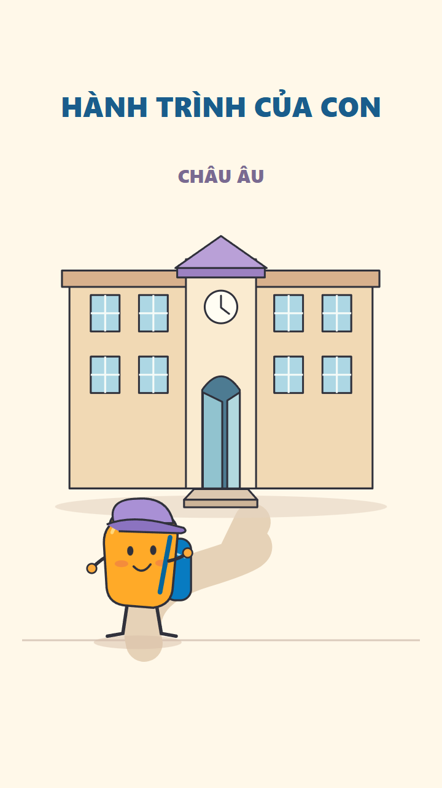
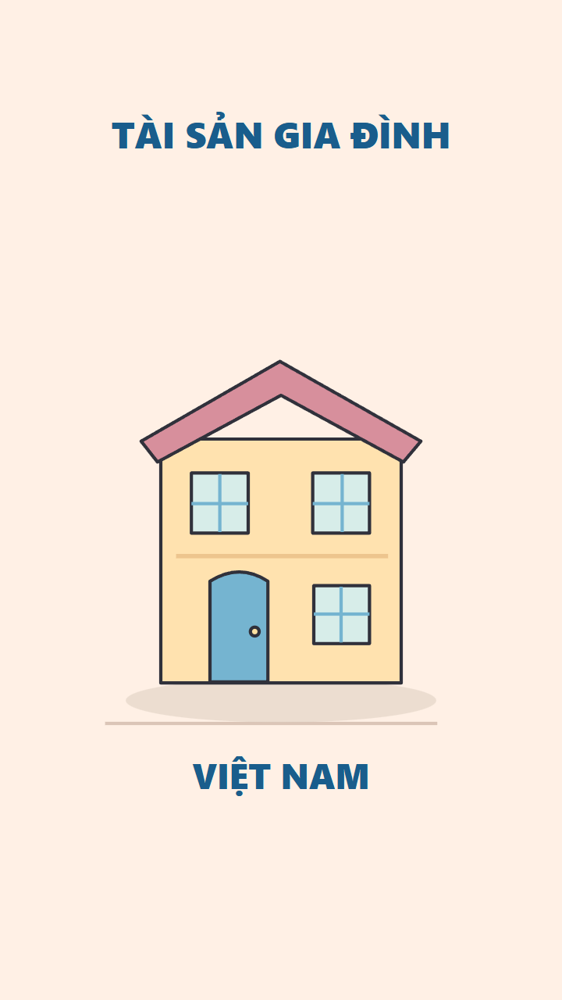
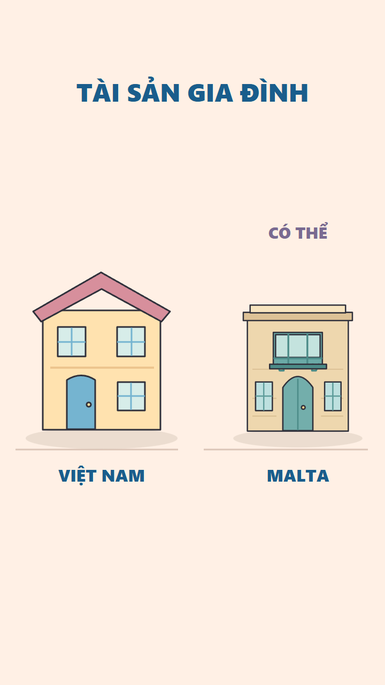
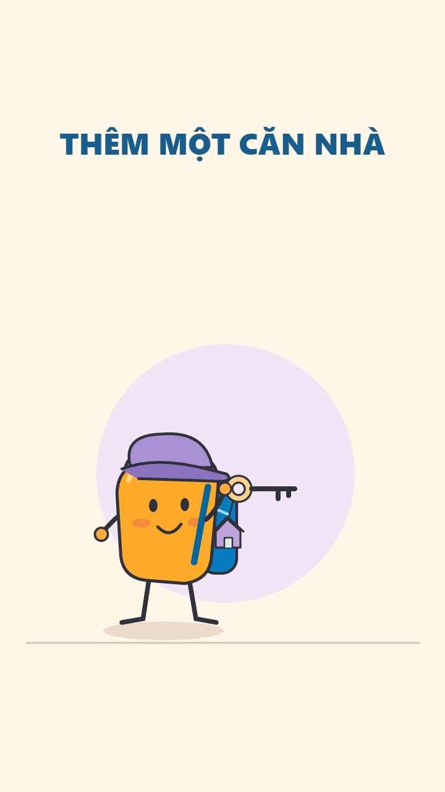
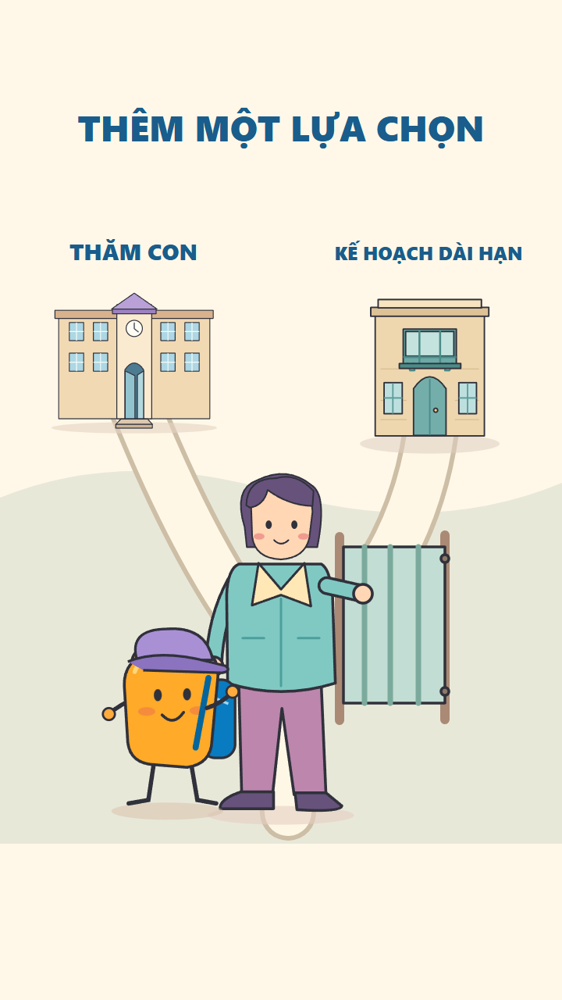
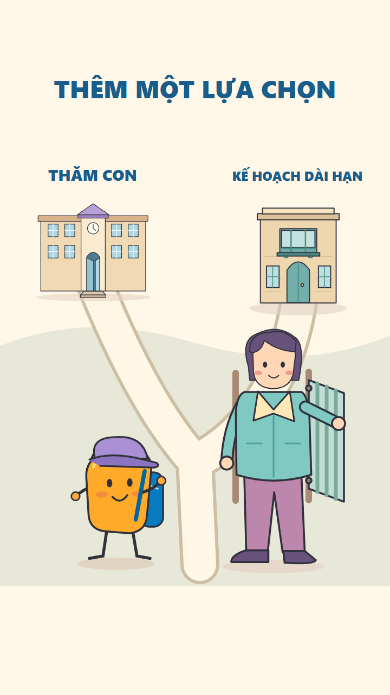

Bộ frame S13/S14 design R1 đã được duyệt ngày 27/10/2026. Sáu pose tĩnh; chưa có motion/pilot mới. S13 = voice15; S14 = voice16–17.
Đạo diễn hành động · S10/S12 motion đã duyệt
Hành trình của con tới môi trường học tập → khung tài sản mở rộng từ Việt Nam sang khả năng thêm địa điểm Malta. Không dùng hai quỹ đạo khó hiểu.



Từ chìa khóa căn nhà → gia đình trước ngã rẽ → mở cổng để có thêm một lối đi. Hình cuối giữ cả hai lối mở, không bắt gia đình chọn ngay.



Đã duyệt hình S13/S14. Bước tiếp theo là dựng hai pilot riêng để duyệt chuyển động; các pose tĩnh chưa chứng minh motion. Master giữ nguyên.